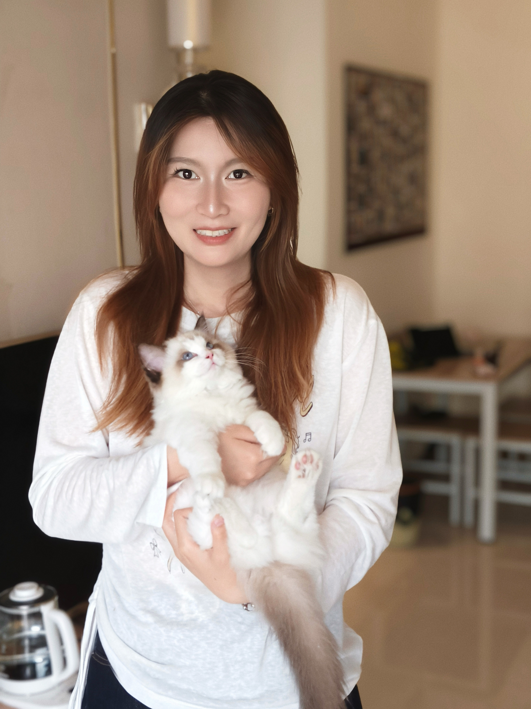

ACT III · BEHIND THE CURTAIN
The Backstage
The education, experiences, skills and processes that shape my creative practice.

Letao Dong (Norah)
A curious mind. An explorer of possibilities. Always seeking change, embracing challenges, and stepping into the unknown.
Driven by curiosity and inspired by diversity, I enjoy learning, experimenting and exploring how ideas can take shape through visual communication, digital media and creative practice. With a background in English and current studies in Interactive Digital Media, I am interested in bringing different perspectives together, developing new skills and approaching unfamiliar challenges with an open mind. I see each project as an opportunity to discover another way of thinking, making and communicating. My creative journey is ongoing: never settling, always evolving.
01 · EDUCATION
Where the story began
Trinity College Dublin
MSc Interactive Digital Media
Xiangtan University
Bachelor of Arts in English
02 · SKILLS
Tools of the trade
VISUAL & DESIGN
Photoshop · Canva · Premiere Pro · CapCut->studying
WEB & PROGRAMMING
HTML · CSS · JavaScript->Studying
MEDIA PRODUCTION
Audacity · Reaper · Photography->Studying
03 · PROCESS
From an idea to a scene
Observe
The project began with my interest in theatre and traditional Chinese performance culture. I explored traditional puppet theatre, Nuo opera masks and the visual elements of Chinese folk art. I also looked at theatrical spaces, materials, colours and decorative details to develop the visual direction of the project.
Explore
I started by imagining the website as an old Chinese puppet theatre. I developed the idea of Simu, the guardian of the theatre, inspired by Fangxiangshi. I explored how the four eyes could become four masks, each connected to a different part of the theatre. I also experimented with colour combinations, character details, page layouts and the overall visual atmosphere.
Create
I translated the visual concept into a five-page portfolio website using HTML and CSS, with JavaScript for future interactive features. I first planned the sitemap and page layouts, then built the basic page structures and shared navigation system. I also worked on typography, colour, content sections and visual elements to create a consistent theatre-inspired experience.
Reflect
The current website is an initial prototype that brings together my visual ideas and developing technical skills. During the process, I learned how to organise a multi-page website, connect HTML pages through navigation and apply a shared CSS stylesheet. I also began exploring how JavaScript could support a more interactive experience. Future development will focus on original visual materials, animated guidance, individual project pages and a more complete portfolio experience.